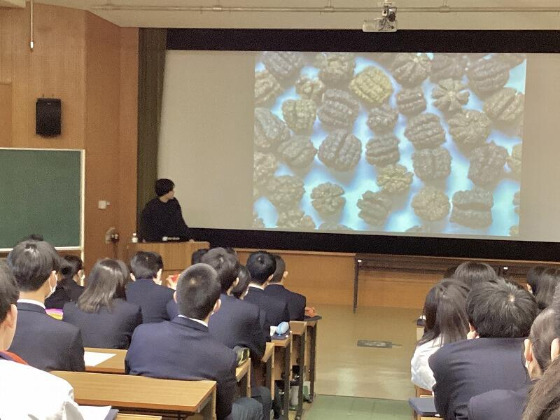
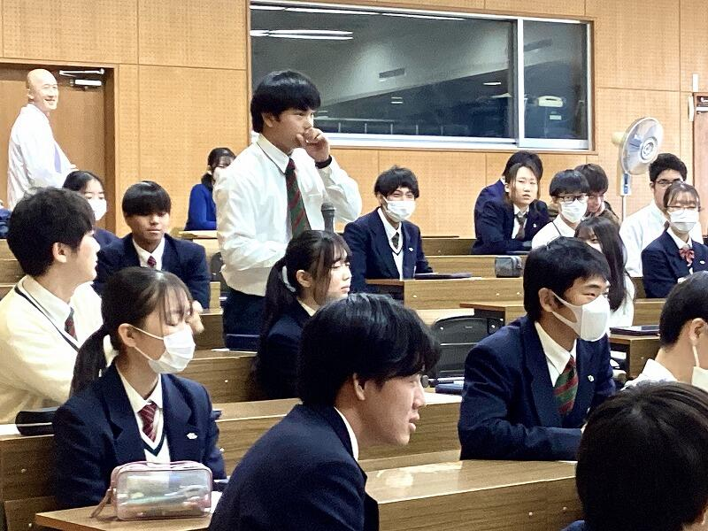
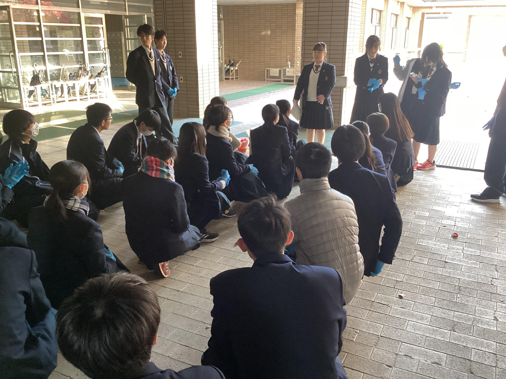
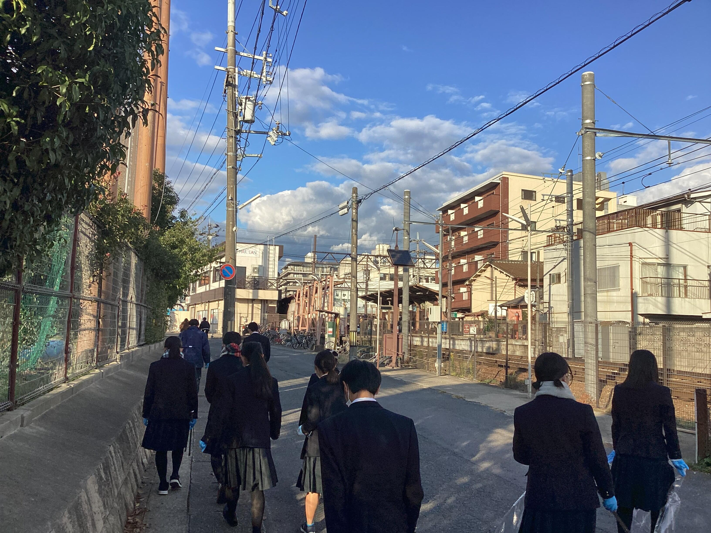
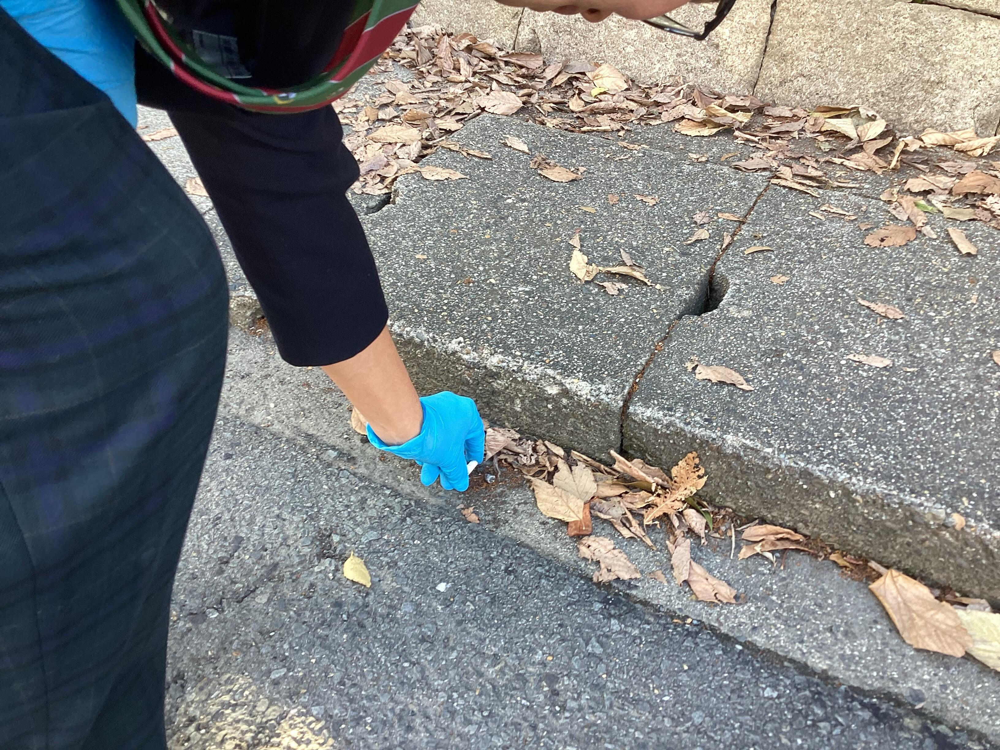
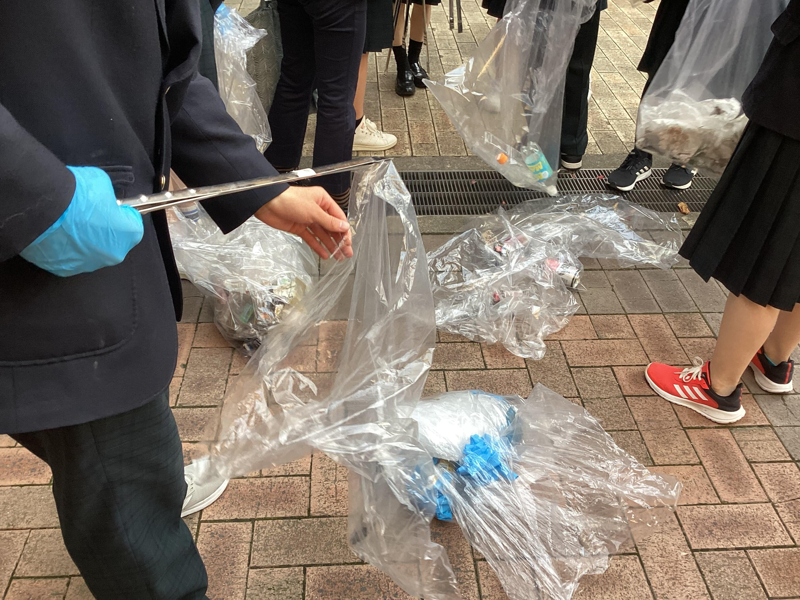

SAGANO BLOG
- >
- SAGANO BLOG
- >
- 日々の様子
2024年01月25日
京都は四季が美しい場所です。とくに嵯峨野は古来より都の貴族がその景色を楽しむために邸宅を立てたことでも有名。そんな文化に思いを馳せながら、嵯峨野高校の今朝の様子をお届けします。
.jpg)


雪景色を期待して、今朝は早めに通勤したのですが、学校にはすでに先客がいました。
凍ったボールもなんのその！自家発電、サッカー部！！
冷たい廊下のその先に！音響の摩擦熱、吹奏楽部！！
寒さって何ですか？集中力のバリア、自習室の受験生！！
雪の下で花を咲かせた水仙のように、
見えないところで努力をしているあなたたちに一首！
冬ながら 空より花の 散りくるは
雲のあなたは 春にやあるらむ
（清原深養父・古今集）
嵯峨野高校の雪景色は春を感じさせるものでした。
寒い日が続きますが、皆さまもよい一日をお過ごしください。
2024年01月25日


１月１６日（火）に金剛能楽堂で、本校２年生を対象に古典芸能鑑賞を行いました。
まず、狂言『附子（ぶす）』です。
主人は、桶に「附子」という猛毒が入っているので、近づかないようにと言って出かけます。
「附子」の方から吹く風にあたっても、命が危うくなると言います。
太郎冠者と次郎冠者は、それが美味しい砂糖と知って......。
茂山千五郎先生（太郎冠者）と茂山逸平先生（次郎冠者）によって、「附子」を危険物としておびえる様子や、その後に美味しそうに食べる様子が演じられ、生徒達は楽しそうに笑って鑑賞していました。
次に、能『葵上』を鑑賞しました。
シテは金剛龍謹先生でした。
こちらは『源氏物語』が題材になっています。
六条御息所の生き霊が、葵上を苦しめようとする場面は、迫力満点でした。
時代を経ても、嫉妬や恨む気持ちがあるということを感じさせられました。
事前学習では、「躍動する時代ー中・近世ーの文芸」ラボと狂言部が、この日を楽しめるようにと解説動画を作成してくれました。
その事前学習があったので、より楽しんで観ることができました。
一流の先生方による能と狂言を鑑賞し、京都の伝統文化に親しむことができました。
2024年01月22日

シンギュラリティバトルクエスト2023 サイバークエストの決勝戦が１月20日・21日に開催されました。嵯峨野高校コンピュータ部の1年生が、合計9時間にわたる戦いの結果、見事１位を獲得しました。
シンギュラリティバトルクエストとはAI/ICTのスキルを競う大会で、AIクエスト、サイバークエスト、データクエスト、ロボクエスト、Xクエストの５つの競技があります。サイバークエストは、情報セキュリティに関するクイズ形式の問題を、セキュリティの知識やソフトを駆使して、隠された言葉(Flag)を見つけるCTF形式の競技です。
サイバークエスト決勝戦は、各ブロック代表６チーム、選抜枠11チーム、リベンジャーズ３チームの合計20チームが競い合いました。RSA暗号や量子暗号に関する難問も出題される大変難易度の高い大会でした。応援ありがとうございました！
2024年01月09日
本日、３学期の始業式を各HR教室への配信で行いました。
校長先生の式辞では、まず年始に起こった能登半島地震や航空機同士の接触事故について触れられ、被災された方々を悼まれました。そして、皆さんには、こうした事例を我が身にも起こり得ることとして捉えるとともに、日頃から防災に対する意識を高め、いざという時に命を守る行動ができるよう促されました。
次に「有終の美」という言葉（物事をやり遂げて立派な成果を上げること）を挙げられ、１，２年生は次の学年のスタートに向けて、3年生は悔いの無い高校生活となるよう、学年最後の3学期を全うして欲しいと述べられました。
その後、進路指導部長からは、共通テストを控える3年生に向けて今までの経験を糧に実力をしっかりと発揮して欲しいと鼓舞されるお話がありました。
最後に伝達表彰式がありました。
午後からは、１、2年生は課題テスト、3年生は授業を行いました。
2023年12月25日
全国高校駅伝の開閉会式の司会は、京都府高等学校総合文化祭放送部門アナウンス小部門の上位４名が担当することとなっており、４位に入賞した本校放送部員がもう１名の生徒とともに開会式の司会を担当しました。
12月23日に全国からの出場校が集い京都市体育館(かたおかアリーナ京都)で行われた開会式において、出場校名の紹介や来賓の紹介などの大役を無事に果たすことができました。全国高校駅伝開閉会式の司会を本校放送部員が担当するのは２年連続８回目となります。来年度の大会でも司会が担当できるよう頑張ります！！
2023年12月20日


華道部は、全国高校生伝統文化フェスティバルの「迎え花」の製作を行いました。
このフェスティバルは、日本の伝統文化に勤しむ全国の高校生が一堂に会する文化フェスティバルです。
全国からの高校生や観客の皆さんをお出迎えするために、お花で会場を飾りました。
部員みんなで一つの作品を作るのは初めてのことでしたが、納得できる作品ができました。
嵯峨野高校は、玄関を入った正面が担当場所でした。
作品テーマは、「Noël」。
作品の説明です。
「ようこそ、京都へ。皆さんをお迎えするにあたり、今日という『ハレの日』にふさわしい華やかな作品としました。『Noël』というテーマで、クリスマスをイメージしています。皆さんのものにサンタが訪れるようなイメージで制作しました。」
このブログをご覧の皆さんのところにも、サンタが訪れますように。
メリークリスマス！
2023年12月20日
12月20日（火）は2学期終業式でした。

吉村要校長先生
吉村校長先生は卒業生が講話で話された「迷ったらワクワクする方へ」という言葉や、アメリカ26代大統領ルーズベルト氏の「失敗をしない唯一の人は何もしない人だ」という言葉を取り上げ、嵯峨野高生の挑戦する背中をそっと包み込むようなお話をされました。「嵯峨野高生のファン」である校長先生は、成功や失敗に関わらず「2学期のみなさんの努力を讃え、新年がみなさんにとって良い年となることを願っています」とお話を締められました。
続いて、柴田副校長の司会のもと、教育推進部長の森田先生のお話でした。森田先生は自身が進路で「何がしたいのか分からない」と悩んだ過去を赤裸々に語られました。「迷い」「悩む」こと自体を肯定したうえで、次のように続きます。
後になって、どんな時にも人生には意味があったと気付くことがあります。ならば、人生の意味を問い求める必要はない。幸福は追い求めてはならない。幸福は結果に過ぎない。この気づきを「こうあらねばならない」と思い込んでいた、あのときの自分とみなさんに伝えたい。『「何か」があなたを待っている』『「誰か」があなたを待っている』
いつもは理論的な森田先生が心を込めて話された内容は、存在自体を肯定してくれるような内容でした。
二人が共に話されたのは「挑戦」や「努力」の裏にある「不安」や「悩み」に寄り添う言葉。
明日から京都にも寒波が訪れるようですが、なんだか温かい気分になる2学期終業式でした。
「失敗」すらも肯定していく嵯峨野では、自然と結果も出るのでしょうか。
以下、2学期はたくさんの表彰がありました。
| 【英語科】第62回全国高等学校生徒英作文コンテスト：１年honorable mention （入選） |
| 【京・平安文化論ラボ】第３回古典の日文化基金賞未来賞 |
| 【軽音楽部】第11回とよさと軽音楽甲子園：NHK大津放送局長賞 バンド名「ハロー二世帯住宅」 |
| 【剣道部】第１回京都府公立高等学校剣道大会：男子団体の部 準優勝 |
| 【剣道部】令和５年度京都府高等学校剣道新人大会：男子団体の部第５位入賞 全国選抜兼近畿選抜京都府予選会のシード権獲得 |
| 【コンピュータ部】第23回日本情報オリンピック (JOI 2023/2024)：予選敢闘賞受賞 |
| 【コンピュータ部】第4回 全国高等学校AIアスリート選手権大会 シンギュラリティバトルクエスト2023 サイバークエスト二次選考：関西ブロック代表として決勝大会出場 |
| 【コンピュータ部】第3回CyberSakura 予選ラウンド：本戦部門第１位 決勝ラウンドに出場 |
| 【将棋部】第40回京都府高等学校総合文化祭将棋部門：男子Ａ級２位 第32回全国高等学校文化連盟将棋新人大会（1/26～27）に出場 |
| 【将棋部】第40回京都府高等学校総合文化祭将棋部門：男子Ａ級３位 |
| 【将棋部】第40回京都府高等学校総合文化祭将棋部門：男子Ｂ級優勝 |
| 【将棋部】第43回近畿高等学校総合文化祭三重大会将棋部門：男子団体３位 |
| 【卓球部】秋季卓球選手権大会 兼 全国選抜・近畿新人大会府予選：女子団体３位 第38回近畿高校新人卓球大会出場 |
| 【卓球部】秋季卓球選手権大会 兼 全国選抜・近畿新人大会府予選：男子団体ベスト８ 第38回近畿高校新人卓球大会出場 |
| 【卓球部】秋季卓球選手権大会 兼 全国選抜・近畿新人大会府予選：女子ダブルスベスト８ 第38回近畿高校新人卓球大会出場 |
| 【卓球部】秋季卓球選手権大会 兼 全国選抜・近畿新人大会府予選：女子シングルスベスト８ 第38回近畿高校新人卓球大会出場 |
| 【卓球部】第47回公立高等学校卓球大会：女子団体第２位 |
| 【美術部】第40回京都府高等学校総合文化祭：美術・工芸専門部令和６年度 第44回近畿高等学校総合文化祭（福井大会）選出 |
| 【放送部】第40回京都府高等学校総合文化祭放送部門：オーディオメッセージ小部門第1位 令和６年度第48回全国高等学校総合文化祭岐阜大会出場 |
| 【放送部】第40回京都府高等学校総合文化祭放送部門：ビデオメッセージ小部門第1位 令和６年度第48回全国高等学校総合文化祭岐阜大会出場 |
| 【放送部】第40回京都府高等学校総合文化祭放送部門：朗読小部門新人戦第1位 令和６年度第44回近畿高等学校総合文化祭福井大会出場 |
| 【放送部】第40回京都府高等学校総合文化祭放送部門：アナウンス部門第4位 男子第74回、女子第35回全国高等学校駅伝競走大会開会式司会担当 |
| 【放送部】第43回近畿高等学校総合文化祭三重大会放送部門：ビデオメッセージ小部門 優秀賞 |
| 【放送部】右京警察署よりの感謝状：特殊詐欺被害防止啓発のための音声録音への感謝状 |
| 【陸上競技部】第18回京都府国立・公立高等学校陸上競技対校選手権大会：男子砲丸投第３位 |
| 【陸上競技部】第18回京都府国立・公立高等学校陸上競技対校選手権大会：女子800ｍ第３位 |
| 【陸上競技部】第18回京都府国立・公立高等学校陸上競技対校選手権大会：男子800ｍ第３位 |
| 【ワンダーフォーゲル部】令和５年度 第43回 京都府高等学校登山選手権大会：女子団体第１位 |
| 【ワンダーフォーゲル部】令和５年度 第43回 京都府高等学校登山選手権大会：女子団体第２位 |
| 【ワンダーフォーゲル部】令和５年度 第43回 京都府高等学校登山選手権大会：男子団体第２位 |
| 【ワンダーフォーゲル部】令和５年度 第43回 京都府高等学校登山選手権大会：男子団体第３位 |
2023年12月19日
CyberSakura予選ラウンドの結果が確定し、嵯峨野高校コンピュータ部から参加したチーム「HEXAGON」は予選ラウンド1位となり、決勝ラウンド出場権を獲得しました。
CyberSakuraは2021年に始まったサイバーセキュリティ分野の人材育成を目的とした教育プログラムです。日本国内の中学生・高校生・高専生（1〜3年）を対象に実際のサイバー攻撃を想定し、仮想のコンピューター上で脆弱な設定や状況を改善することで獲得できるスコアをチーム対抗で競います。
決勝ラウンドは、2024年３月24日に福井県鯖江市で開催され、予選ラウンド上位5チームが競技に参加します。
2023年12月18日

12月17日(日)に行われた第47回京都府公立高等学校卓球大会において、女子団体の部で第２位となりました。ここまで日々頑張ってきた練習の成果だと思います。卓球部は男女とも12月23日から和歌山で行われる近畿大会に出場しますので、引き続き応援をよろしくお願いします。近畿大会に向けてよい流れを呼び込む結果となりました。
2023年12月15日


12月14日（木）７限のＬＨＲにおいて、２年生を対象に卒業生講話を行いました。本校の卒業生計６名が、文理別に受験勉強における経験談や、大学生活の様子や学部・学科の魅力など、貴重な生の声を在校生に向けて語ってくれました。
生徒達も、先輩からのメッセージにメモを取りながら真剣に耳を傾けており、まず何に取り組むべきか具体的に自分のやっていくべき事に考えをめぐらすよい機会となりました。
２学期後半になり、様々な進路関係の行事に取り組んでいます。いよいよ受験生への変革に向けて、主体的に学ぶ姿勢を深化させることに期待します。
2023年12月15日

12月14日（木）７限のＬＨＲに、３年生共通テスト受験者対象に説明会を行いました。各ホームルーム教室にて、スライドと担任による説明で受験上の注意事項の確認をしました。共通テストまであと３０日。当日に実力が出せるよう、準備をしっかりとしておきましょう。
2023年12月13日
外務省...。お仕事の想像が難しいので略歴をご紹介させていただきます。

田中 宏明さん
2011年3月 京都府立嵯峨野高校卒業
2015年9月 京都大学法学部卒業
2016年4月 外務省入省
2016年5月 軍縮不拡散・科学部軍備管理軍縮課
（核軍縮に関する取組、オバマ大統領の広島訪問、NPT運用検討会議等の大型行事）
2018年4月 米国研修（デューク大学ロースクール留学）
2020年4月 ポーランド大使館二等書記官
（情報収集・働きかけ、対EU関係、ウクライナ情勢対応、大臣訪問対応）
2022年4月 中・東欧課（ウクライナ情勢対応）
2022年6月 南米課（南米１０カ国所掌、要人の訪問・来日の大型行事、国連総会等の国際会議）
...ますます遠い存在に感じます。田中先輩を前に最初はガチガチのみなさん。


しかし、ここから田中先輩のすごさを教員共々、思い知ることになるのです。
外務省に勤務するためには、語学や国際法等の知識ももちろん大切ですが、田中先輩はその知識を活かすためのコミュニケーション能力の大切さも教えてくださいました。大使館等海外の勤務地で、重要かつ正確な情報をいち早く入手するためには、様々な方との日頃からのコミュニケーションが大切であり、そのために人間関係のメンテナンスを意識的に行っておられるとのこと。
身振り手振りを交えて、熱くお話しいただいた結果、終盤には生徒のみなさんはこの表情！
外務省という難しいお仕事の紹介でしたが、信頼は安心に繋がるようで、笑顔の絶えない講演となりました。後輩へのメッセージとして、以下３つのことを教わりました。
・世界に目をむけよう。
・問題意識を持って、好奇心と情熱を胸に。
・「夢」を諦めないで、迷ったらワクワクする方へ。
講演後、心に火のついた様子の生徒が...


これからも嵯峨野高校は生徒の皆さんを通じて、教育で世界とつながっていきます。『迷ったらワクワクする方へ』飛び立て！嵯峨野高生！！
2023年12月13日
今週は卒業生が講義に来てくれる、嬉しい授業が続きます！
第一弾は12月13日（水）1,2時間目、『サイエンスレクチャー2023』！！

丸岡さんは生物間（虫と植物など）相互に作用する化学因子に注目して、
メカニズムを解明する研究をされています。
その研究から生まれたのが...今注目の『虫秘茶』！！
なんと虫（蛾の幼虫）のウンチでできたお茶なのです！！
そして...そのウンチ！

おっかなびっくり実物の香りを嗜む生徒のみなさん。しかし、無意識のうちにウンチの匂い方も手で空気を鼻孔に送る理系作法です。
あまりの芳香に「桜餅の香り！飲んでみたい！」「このまま食べられる！」との声も。
このメカニズムをどのように解明するのか、分析の方法も教わりました。
ここがサイエンスレクチャー！
生徒から研究の今後の展望や社会的な展開などの質問を受け、丁寧にお答えいただきました。その最後に「この研究の意義は何より、自分が一生楽しめる研究を見つけたということです」とお話しされたことがとても印象的でした。講義後「好奇心が既存の常識を上回ったのはいつ頃からですか？」とお尋ねしてみると「僕は馬鹿になれることが、かっこいいことだと思っています。そうなれたのは高校2年生のときです。受験勉強がきっかけで、人の目を気にせず、やりたいことに真っ直ぐ努力できる人になりたいと思いました。」とのことでした。
生徒の皆さんが一生懸命質問しているとき、嵯峨野生の好奇心が育っているのを感じました。この講演を企画した先生の顔はとてもうれしそうでしたよ。

どうか皆さんも好奇心を味方に、無限の可能性で嵯峨野から大きな空へ羽ばたいてください。
2023年12月01日
11月30日（木）７限に２年生を対象として「情報Ⅰ」入試対策ガイダンスを行いました。このガイダンスでは、現在の２年生が受験する大学入学共通テストから新設される「情報Ⅰ」に向けての対策について話をしました。
進路指導部からは、各大学での共通テストにおける「情報Ⅰ」の配点や今後の模試のスケジュールついて、情報科からは具体的な対策（動画配信やオンライン教材の活用）について話をしました。
初めてのことで不安もあると思いますが、できる限りのサポートをしていきたいと考えています。
2023年11月24日
11月22日(水)の放課後、京都府立医科大学教授 高嶋直敬先生より
「生活習慣と脳・心臓病」についてご講義いただきました。
医学に興味ある生徒が奮って参加し、高嶋先生より熱い講義をいただきました。
こういう時の嵯峨野校生の背中はたくましいのです。
目をそらざす、聴き逃してなるものかと耳を傾ける姿勢に、医学への関心の高さが現れています。
「疫学」とは
【明確に規定された人間集団の中で出現する健康関連のいろいろな事象の頻度と分布およびそれらに影響を与える要因を明らかにして、健康関連の諸問題に対する有効な対策樹立に役立てるための科学】のことです。
一生懸命、人の役に立つために努力している皆さんを誇りに思います。
高嶋先生、貴重な機会をいただき、ありがとうございました！
2023年11月20日
11月15日（水）の15:10から16:20にかけてボランティア委員会の活動として、校外清掃活動を実施しました。これまで３年生が校舎のベランダの清掃を、１年生が校内の落ち葉清掃をそれぞれ行ってきました。今回はJRC（青少年赤十字）に所属する生徒のが中心となり、２年生ボランティア委員と生徒会役員が協力して学校周辺の清掃活動を行いました。
まずは、JRCの部長から場所の分担や諸連絡があり、３班に分かれて出発します。

丸太町通りや太秦駅方面などに分かれてごみ拾いを行います。一見きれいに見える道路も目を凝らしてみると多くのごみが投棄されており、時間が余るどころか足りないくらいでした。精力的に清掃活動に取り組む生徒の姿を見て、「地域をきれいにしてくれてありがとう。」と声をかけてくださる方もおられました。

最後はJRCの生徒たちが集まったごみを丁寧に分別してくれました。

JRC、生徒会本部、２年生ボランティア委員会と多くの生徒が協力した結果、広い範囲の清掃活動を行うことができました。今後も学校周辺の環境美化に努めていきます。
2023年11月16日
2023年、嵯峨野高校宇宙の旅。
そう、旅立ちは地学実験室...
いきなり乗組員にされて戸惑う生徒の皆さん。

思わぬ動きをする天井。
なぜか天井の動きに合わせてしゃがみ込む生徒。
淡々と説明を続ける教官（先生）
宇宙の旅に出る決意を固めた乗組員（生徒）。
いざ、乗船！
そして宇宙へ！！
なぜか地球を見るとホッとするね！
帰還して（プラネタリウム上映後）しばらく圧倒されたような姿が印象的でした。
こんなに壮大な授業の後では、渡り廊下のいつもの空も宇宙と繋がって見えます。
やっぱり嵯峨野の地学実験室は生徒の視野を広げる秘密基地なのでした。
2023年11月15日
嵯峨野高校狂言部では、来る12月16日(土)に、今年の「嵯峨野高校狂言の会」を開催します。
日時：令和5年12月16日(土) 午後2時開演
会場：冬青庵能舞台(京都市中京区両替町通夷川下ル、地下鉄「丸太町」「烏丸御池」駅から徒歩5分)
冬青庵能舞台のホームページ
曲目：『蟹山伏(かにやまぶし)』、『附子(ぶす)』(以上嵯峨野高校生)、『伯母ヶ酒(おばがさけ)』(茂山千五郎先生、網谷正美先生)
入場無料
御参加の申込は、次の要領でお願いいたします。
嵯峨野高校生･御家族は、配布した参加申込書をホームルーム担任へお渡しください。
学校外の方は、メールアドレス [email protected] へ、次の要領でお申し込みください。
・メールの題名は「狂言の会申込み」としてください。
・メールの本文には、次の内容を記載してください。個人情報は十分注意して管理いたします。
(1) 参加を希望される人数
(2) 各自のお名前
(3) 返信先のメールアドレス
定員(60名)まで先着順により、整理券をお渡しします。メールで申し込まれた方には、メールで整理番号を返信します。当日は、全席自由です。
なお、当日、発熱や風邪症状がある場合は、恐れ入りますが入場を御遠慮ください。
現在、茂山千五郎先生の指導のもと、部員3人が張り切って稽古中です。ぜひ御来場ください。
(記事上の画像は、昨年の「嵯峨野高校狂言の会」のものです。)
2023年11月11日
１１月９日木曜日７時間目、２年生対象の進路ガイダンスⅡを行いました。
分野別の会場に分かれて行いました。分科会によっては大学や専門学校から講師の先生をお招きしてのガイダンスでした。
各会場には、熱心にお話を聞き、これまでの自分を振り返り、それぞれのこれからについて真剣に考える２年生の姿がありました。
本格的に受験生となるこの時期、一日一日を大切に、じっくりと歩んでいきましょう。
2023年11月10日


{kind=link}
{kind=link}
{kind=link}
{kind=link}
{kind=link}
{kind=link}
{kind=link}
{kind=link}
{kind=link}
{kind=link}
{kind=link}
{kind=link}
{kind=link}
{kind=link}
{kind=link}
{kind=link}
{kind=link}
{kind=link}
{kind=link}
{kind=link}
{kind=link}
{kind=link}
{kind=link}
{kind=link}
{kind=link}
{kind=link}
{kind=link}
{kind=link}
{kind=link}
{kind=link}
{kind=link}
{kind=link}
{kind=link}
{kind=link}
{kind=link}
.jpg){kind=link}
{kind=link}
{kind=link}
{kind=link}
{kind=link}
{kind=link}
{kind=link}
{kind=link}
{kind=link}
{kind=link}
{kind=link}
{kind=link}
{kind=link}
{kind=link}
{kind=link}
{kind=link}
{kind=link}
{kind=link}
{kind=link}
{kind=link}
{kind=link}
{kind=link}
{kind=link}
{kind=link}
{kind=link}
{kind=link}
{kind=link}
{kind=link}
{kind=link}
{kind=link}
{kind=link}
{kind=link}
{kind=link}
{kind=link}
{kind=link}
京・平安文化論ラボです。
古典離れを課題とし、その課題解決のための探究活動をしています。
その取組やスタンプラリーの様子を、ＮＨＫ京都様に取り上げていただきました。
当日は、生放送での出演となり、とても緊張しましたが、良い経験となりました。
今後は京洋菓子司ジュヴァンセル様とのコラボ企画により、生徒一人につき登場人物一人をデザインした洋菓子の販売を予定しています。
〔ＮＨＫプラスでは、１週間は見逃した番組を見ることができます。（登録必要）〕
商品のご紹介 ※「」は商品名です
１チョコレートの詰め合わせ･･････「萩の上露」～光源氏・紫の上・桐壺更衣～
２チョコレートの詰め合わせ･･････「恋路」～玉鬘・六条御息所・夕顔～
３チョコレートの詰め合わせ･･････「淡月」～光源氏・明石の君・朧月夜～
４チョコレートの詰め合わせ･･････「絶えぬ思ひ」～光源氏・女三宮・柏木～
５チョコレートの詰め合わせ･･････「すゑつむ花」～内面と外面～
６タルト････････････････････････「光源氏」
７クッキー･･････････････････････「薫る大将」
８パウンドケーキ････････････････「花散里」
９ケーキ････････････････････････「藤壺」
１０ケーキ･･････････････････････「葵の上」
以上、１０種類です。
なお、一般販売は、２月から、京洋菓子司ジュヴァンセル様の御池店とオンラインショップで販売されます。
（御池店 京都市中京区御池通高倉西入高宮町216 TEL 075-231-7571）
２月からということで、少し先ですが、どうぞお楽しみに！
〒616-8226
京都市右京区常盤段ノ上町15番地
TEL 075-871-0723 FAX 075-871-0724
E-mail [email protected]
Copyright (C) 京都府立嵯峨野高等学校 All Rights Reserved.